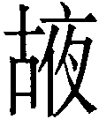
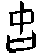
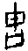
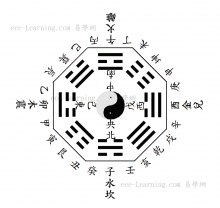

18 蠱卦 山風蠱
蠱，元亨，利涉大川。先甲三日，後甲三日。初六，幹父之蠱，有子，考无咎，厲終吉。九二，幹母之蠱，不可貞。九三，幹父之蠱，小有悔，无大咎。六四，裕父之蠱，往見吝。六五，幹父之蠱，用譽。上九，不事王侯，高尚其事。
【卦名】
今本：蠱 帛書：箇 歸藏：夜 秦簡：夜（亦） 上博簡：蛊 清華簡： 海昏：蠱
蠱、蛊
蠱字形構為皿上有蟲，或指肚子裡的蟲，講的是下蠱、下毒之事，也就是「以鬼物飮食害人」，後來引申為迷惑、蠱惑，也可做敗壞、腐壞解。
《說文》：「蠱，腹中蟲也。《春秋傳》曰：皿蟲為蠱，晦淫之所生也。」段注：「謂行蟲毒也。」「皿蟲為蠱，穀之飛亦為蠱。在《周易》，女惑男、風落山謂之蠱。皆同物也。和言如蠱者，蠱以鬼物飮食害人。女色非有鬼物飮食也，而能惑害人，故曰如蠱。人受女毒，一如中蠱毒然。」
依段注，蠱指的是蠱毒，現今說的「下蠱」，就是以毒物或鬼怪來害人的行為。引而申之，受女色之迷惑亦稱蠱。
箇、故、古、
在《周易》蠱意思為整飭，謂事情來了，必需整飭。這層意義是從「故」或「古」而來。或者可說，蠱假借為古（故）。
《序卦傳》：「蠱者事也。」《雜卦傳》：「蠱則飭也。」《象傳》：「蠱，君子以振民育德。」再縱觀《周易》經文，蠱字應當作「事故」的「故」解釋，通「古」。《雜卦傳》說「隨無故」，隨與蠱為陰陽相反的一對卦，隨無故則蠱為故。故者事也。
王弼與荀爽皆以事釋蠱。王弼：「蠱者，有事而待能之時也。」《九家易》：「子行父事，備物致用，而天下治也。」荀爽：「蠱者事也，備物致用，故天下治也。」
帛書蠱卦作箇，箇俗作个，一个兩个的个。箇應是假借為固，鞏固之意，符合「蠱則飭也」。《說文》：「固，四塞也。」段注：「凡堅牢曰固，又事之已然者曰固，即故之假借字也。」依段注，固是故的假借，因此帛本箇亦通故。
「古」的甲骨文作或，也是故的初文，意指有事發生，現今說的「事故」的意思。劉興龍《新編甲骨文字典》：「象置兵器盾于口，示大事發生，為古、故的初文。」「卜辭作故，辦事也：其从王古…。」另有一看法認為古是固，堅固的意思。
清華簡卦名作，疑為「故」之異體字。
夜、亦、
馬國翰輯本《歸藏》引李宗炎認為「蜀」即「蠱」，當代學者多有附和並引而申之加以論證者。《歸藏》中相連的規、夜兩卦原本也爭論不休，朱彝尊推論說：「非夬、姤則噬嗑、賁也。」當代學者如于省吾認為「夜」當是現今的豫卦，聞一多從之。
但近年出土的王家台秦簡確定「蠱」作「夜」或「亦」，則《玉函山房輯佚書》輯本的「蜀」卦並不是蠱。而「夜」既然確定為蠱，「規」也可確定為隨。至於蜀，由於與 （遯）成對，因此可能為大壯卦。
（遯）成對，因此可能為大壯卦。
《說文》：「夜，舍也，天下休舍也，从夕亦省聲。」夜從亦從夕，為天下休息的意思。作為夜晚的夜，與夕的意思相同。在卜辭中或省作亦，因此秦簡中或作夜，或作亦。
細究《周易》經文，本卦與夜之本義缺乏關聯，因此夜應另有他義。
清華簡作，從古從夜。字學者研究不多，清華簡中古與夜兩字都與小篆相近，因此應是另有所屬。個人推測，當讀作古或故，是「故」的古字或異體字。「古」字形構原本表達的是以盾等武器放於桶中待命，以示有事發生的意思。夜字從夕從亦，所從之「亦」是腋或掖的本字，古加一夜或亦字或許是要強調待命的意思，意味至夜仍不敢鬆懈。在後來的發展中，有以「古」或「故」音假借者，而成箇以及今日之蠱。另有以字形簡化者，變成了夜或亦。
然而這只是個人揣測，實情如何，仍有待更深入的研究或未來更多資料的佐證。
【卦義】
敗壞、蠱惑、迷惑，出事、整飭。子承父事。
「蠱」原本為「古」之假借，古通故、固，為「事」或整飭的意思，謂有事發生，或有待整飭。在後來的發展中蠱卦卦義宣賓奪主，又以「蠱」的本字發展出迷惑、腐敗等意思，但在經文之中蠱仍宜解釋為「事」或整飭。
李鼎祚《周易集解》引《尚書大傳》：「乃命五史，以書五帝之蠱事。然為訓者，正以太古之時无為无事也。今言蠱者，是卦之惑亂也。時既漸澆，物情惑亂，故事業因之而起惑矣。」
《左傳》：「女惑男，風落山，謂之蠱。」蠱卦上為少男，長女之陰爻與少男之陽爻皆不當位，為長女迷惑少男之象。上卦為艮為山，下卦為巽為風，風落於山下，風以散之，山下養擾亂之風，為腐敗之象。又艮為碩果，風吹果落之象。
卦序上蠱是繼隨卦而來，隨為隨從於人，《序卦傳》說：「以喜隨人者必有事，故受之以蠱，蠱者事也。」《雜卦》：「隨无故也，蠱則飭也。」隨卦卦象動以悅即是以喜隨人，隨從於人則無事，日久而怠則有事待整飭。
蠱卦有如人身體的慢性病，一旦發現時表示病情拖延已久，但還不至於立即死人，因此若開始調養身體，改變成好的生活、養生習慣，則可以重新得到健康。得蠱卦，當知腐敗已經產生，若能夠盡快處理，重新規畫新的未來，則亡羊補牢，時猶未晚，蠱卦也有亨通之道；但若有事還不積極整飭，繼續放任，那麼就會一路壞到底，無法挽回。
朱熹：「蠱者，前人已壞之緒，故諸爻皆有父母之象。子能幹之，則飭治而振起矣。」蠱也可視為前代或累世之敝，由後人承擔。
蠱，元亨，利涉大川，先甲三日，後甲三日。
- 彖曰：蠱，剛上而柔下，巽而止，蠱。蠱元亨，而天下治也；利涉大川，往有事也；先甲三日，後甲三日，終則有始，天行也。
- 象曰：山下有風，蠱。君子以振民育德。
- 序卦傳：以喜隨人者必有事，故受之以蠱，蠱者事也。有事而後可大，故受之以臨。
- 雜卦傳：隨，无故也。蠱則飭也。
【今解】
整飭而可大亨，宜於涉水渡大河。事情創始的前三天就要準備，事情創始之後的三天也要檢討。
「先甲三日，後甲三日」原本意指吉日，甲日之前三日即辛日，以及甲日之後三日即丁日。辛日與丁日皆為吉日。
後世將此句引申之，認為「甲」指的是有事（蠱）之後的革新，重新制定與施行一件事，也就是「重新開始」的意思。因為「甲」為十天干之首。「前三日」與「後三日」則是指施行要有規畫與思慮。因為能夠努力重新再來，所以事情雖然敗壞，仍然講「元亨利涉大川」。
「元亨」帛本作「元吉，亨」。
【字義】
先甲三日，後甲三日：歷代說法相當多，但基本分兩方向，一是指「吉日」，這應該是《周易》的原義。二是指做事要有規畫和深思遠慮，這是引申義。古時以十天干「甲乙丙丁戊己庚辛壬癸」計日，那麼先甲三日、後甲三日分別為辛日和丁日。這兩日為做事的好日子，所以講的是吉日。今本卦辭「元亨」帛本作「元吉，亨」，可為證。這應該是最原始的意義。另《子夏傳》則說：「先甲三日者，辛、壬、癸也。後甲三日者，乙、丙、丁也。」二是引申義，因為十天干以甲為首，因此把「甲」當做是創制、初次施行的命令、事情的的開始…。先甲後甲三日為法令的試行或宣傳期，用以比喻人做事有規畫，有謀慮，而不是隨意亂為。王弼：「甲者，創制之令也。創制不可責之以舊，故先之三日，後之三日，使令治而後乃誅也。」鄭玄：「甲者，造作新令之日。先之三日而用辛也，欲取改過自新之義。後之三日而用丁也，取其丁寧之義。」鄭玄說明更細，他說，施行命令之前，取「甲」日為基準，前三天為「辛」日，辛有「改過自新」的意味，而之後的三天為「丁」日，取「丁寧」的意思。馬融解釋：「甲在東方，艮在東北，故云先甲。巽在東南，故云後甲。所以十日之中唯稱甲者。甲為十日之首，蠱為造事之端，故舉初而明事始也。言所以三日者，不令而誅謂之暴，故令先後各三日，欲使百姓遍習，行而不犯也。」巽卦九五有「先庚三日，後庚三日，吉」，解釋亦與「先甲三日，後甲三日」類同，但馬融說法顯然無法解釋「先庚三日，後庚三日」。《尚書．益稷》談到大禹娶塗山氏之事：「娶于塗山，辛壬癸甲。」意思是說，辛日娶，經過壬癸甲三日，便前往治水。此或許為「先甲三日」的典故。
{kind=link}
山下有風：俞琰：「小畜之風在天上，觀之風在地上，渙之風在水上，並無所阻，故皆言行。蠱之風則止于山下，為山所阻，而不能條達，故不言行而言有。」
君子以振民育德：李舜臣：「育德者，猶艮山之養成材力也。易中育德多取於山，故蒙亦曰果行育德。」
【筮例】
《左傳》：僖公十五，秦穆公準備討伐晉國時問了一卦，得蠱：
晉侯之入也，秦穆姬屬賈君焉，且曰：「盡納羣公子。」晉侯烝于賈君，又不納羣公子，是以穆姬怨之。晉侯許賂中大夫，既而皆背之。賂秦伯以河外列城五，東盡虢略，南及華山，內及解梁城，既而不與。
晉饑，秦輸之粟；秦饑，晉閉之糴，故秦伯伐晉。卜徒父筮之，吉，涉河，侯車敗。詰之，對曰：「乃大吉也，三敗，必獲晉君。其卦遇蠱，曰：『千乘三去，三去之餘，獲其雄狐。』夫狐蠱，必其君也。蠱之貞，風也；其悔，山也。歲云秋矣，我落其實，而取其材，所以克也。實落材亡，不敗何待？」
由於晉惠公沒有誠信，違背當初秦穆公送他回國幫他順利即位的割地承諾，甚至不顧晉國饑荒時秦國的慷慨解囊，反而在秦國鬧饑荒時乘機攻打秦國，因此秦穆公隔年決定伐晉，為此而筮問一卦，得到蠱卦。
卜徒父回答說：這是吉卦，連續三次擊敗晉軍之後，就能夠擄獲晉惠公。蠱卦這麼說：「千台車子三次前去，之後就能夠虜獲雄狐狸。」狐狸是蠱惑人的東西，指的是晉國國君。蠱卦的貞卦是風，它的悔卦是山，就時節來說是秋天，我們打落了他們的果實，然後取走了他們的資材，這就是勝利。他們的實力將隕落，資材將遺失，怎會不失敗？
「千乘三去，三去之餘，獲其雄狐」有些像是引用《周易》，也有些像卜徒父的創作，總之與今本《周易》卦辭做「利涉大川，先甲三日，後甲三日」不同。杜預注說這是因為卜徒父為卜官，不懂三易的筮法。但事實上卜官才是真正的筮法專家，所以杜預說法不可信。
後世學者多認為這是失傳的三易之法，也就是指這是連山或歸藏易。但連山和歸藏目前為止都還只是傳說中的東西，占法也不知如何，此說更加不可採信。細究之下，這裡使用的也是《周易》，只是引用卦辭不同，方法上並無差異。更何況這還有可能就是卜徒父的即興創作，這種例子在春秋筮例中是很常見的。
卦辭不一樣的原因有幾個可能。首先，這可能是因為《周易》在春秋時還在演進之中，並未完全穩定成為今本的樣子。其次，這是另一個更為古老的《周易》版本。最後一個可能則是，純粹是歷代傳抄的誤差而讓《周易》有了不一樣的面貌。
《左傳》昭公元年，秦國的醫和被派到晉國幫晉平公看病，說晉平公得的是「蠱」病，也就是長期沉溺於女色，而腐蝕了他的心志所產生的疾病。
幫晉君看完病之後，晉國宰相趙孟又跟醫和請教晉君的病況，並問他什麼是蠱？於是醫和引用了《周易》蠱卦卦象說：「淫溺惑亂之所生也。於文，皿蟲為蠱。榖之飛亦為蠱。在《周易》，女惑男，風落山謂之蠱，皆同物也。」
女惑男指的是卦象上為少男，下為長女，長女迷惑了少男。風落山指上艮山下巽風，風吹落而擾亂於山下。蠱卦於字義講的就是腐敗，事物長期被浸淫在不好的環境下而產生的敗壞，醫和另舉了兩個例子來說明。一是字的字形就是皿中長蟲，二是穀子放久了就會長米蟲到處亂飛。
初六，幹父之蠱，有子，考无咎。厲終吉。
象曰：幹父之蠱，意承考也。
【今解】
有兒子承擔父親的事，死去的父親不會有罪咎。艱苦則最終可得吉。
父親未完成之事，幸賴有能幹的兒子能夠繼承父親的責任，讓做父親的死也瞑目。雖然艱苦而有危險，但最終為吉。
初六承九二，有承父之象。又初爻動則成乾，乾為父，動而承父業。
【字義】
幹父之蠱：幹為承擔，現今我們說「幹事」的「幹」。父之蠱，父親的事。幹父之蠱，能夠承擔父親未完成的重任。
有子考無咎：有三種讀法，一是五字一句，二是「有子，考無咎」，三是「有子考，無咎」。意指有兒子繼承父事，讓父親死也能瞑目。考，父親死了稱「考」。考無咎，死去的父親不會有罪咎。虞翻：「父死大過稱考，故有子考。」俞琰：「父死則稱考，今以父與考並稱者，為子之職，父在亦當幹，父死亦當幹也。」「考」帛本作「巧」，上博簡作「攷」。攷為考的異體字，巧當是假借為考。考也可當考驗、考核、考察，或者當「成」，完成的成。因此也可解釋為有兒子完成父事（有子考），因此無咎。或有兒子承擔父親之事，若能對事情加以考察，當能無咎。
九二，幹母之蠱，不可貞。
象曰：幹母之蠱，得中道也。
【今解】
承擔母親的事，不可以貞定於此。為人子者不適於承擔婦人的事，所以這種事不宜堅持。
【字義】
幹母之蠱：原意為承擔母親的事。但為何承擔母親的事？有兩種解釋。一是指為人子者去做了母親的事，那是屬於女人家的事，不宜由兒子來承擔，所以「不可貞」。而就卦象來看，九二為陽剛，與六五相應，六五為母，因此九二「幹母之蠱」。二是認為初九「考無咎」，父死才稱「考」。因此「幹母之蠱」意謂父親死後由母親承擔父親之事，然後由兒子為母親分擔責任。以上兩種說法以一較佳。
不可貞：貞為貞定、堅定，堅持之意。不可貞，不可堅定此事。另一解釋，貞者事之幹，不可貞者，不可為事之幹。
九三，幹父之蠱，小有悔，无大咎。
象曰：幹父之蠱，終无咎也。
【今解】
承擔父親的事，有小小的後悔，但並無大罪咎。
九三處多憂之位，動而成坎，坎為心病為憂心，故有悔。九三陽剛又當位，故其悔不大而小。此言努力要挽救父親之事，但難堪重任，因此而有些悔恨，但還不至於會有罪咎。
六四，裕父之蠱，往見吝。
象曰：裕父之蠱，往未得也。
【今解】
增加父親的事，以此前往則悔恨。此言六四無能，讓事態更加嚴重。
【字義】
裕父之蠱：有兩種不同的解釋。一、讓事態更加嚴重。裕，豐富，增加的意思。父親責任未了，現在又讓事情更多，為裕父之蠱。二、裕原義為寬裕，裕父之蠱，以寬裕之方式處理父親之蠱事。蠱之時，當努力整飭，過於寬裕則有懈怠之過失，因此說往見吝。朱熹：「以陰居陰，不能有為，寬裕以治蠱之象也。如是，則蠱將日深，故往則見吝。戒占者不可如是也。」
六五，幹父之蠱，用譽。
象曰：幹父用譽，承以德也。
【今解】
承擔父親的責任，能夠繼承父親的道德，藉以建立好的聲譽。
六五雖柔而無能，但居於尊位，柔中而與九二相應，又承上九，得多方陽剛（喻君子、能人）之助，因此為吉。
【字義】
用譽：建立好的名聲。用以得到聲譽。朱熹：「柔中居尊，而九二承之以德，以此幹蠱，可致聞譽。」
上九，不事王侯，高尚其事。
- 象曰：不事王侯，志可則也。
- 《禮記》：子曰：「事君，軍旅不辟難，朝廷不辭賤。處其位而不履其事，則亂也。故君使其臣，得志則慎慮而從之。否則孰慮而從之。終事而退，臣之厚也。《易》曰：『不事王侯，高尚其事。』」
【今解】
不用再為王侯做事，只以「高尚」為事業。
居蠱卦的最頂端，蠱道已成，已經置身事外，天下本無事，所以不用再為王公做事，可以開始做自己。「高尚其事」謂以「高尚」為事業，志向高尚的人，不偶合於世俗，此為獨善其身，自得其樂之義。《禮記》引用孔子以此段經文談臣事君之道，並以「終事而退，臣之厚也」詮釋。
【字義】
不事王侯：不為王侯做事。「事」也是前幾爻所說的「幹父之蠱」，父之蠱原本就是為王侯做事，現在已能終事而退。《象》曰：「不事王侯，志可則也。」
高尚其事：以「高尚」為事的意思，比喻獨善其身，自得其樂。孔穎達：「身既不事王侯，志則清虛高尚。」程頤：「是賢人君子不偶於時而高潔自守，不累於世務者也，故云不事王侯，高尚其事，古之人有行之者，伊尹、太公望之始，曾子、子思之徒是也。不屈道以徇時，既不得施設於天下，則自善其身，尊高敦尚其事，守其志節而已。」
【彖傳】
蠱，剛上而柔下，巽而止，蠱。蠱元亨，而天下治也；利涉大川，往有事也；先甲三日，後甲三日，終則有始，天行也。
剛上而柔下：以卦變解釋蠱卦。蠱卦是泰卦而來，泰初九至上為剛上，泰上六至初為柔下。虞翻：「泰初之上，與隨旁通。剛上柔下，乾坤交，故元亨也。」
巽而止：以上下二體卦德解釋蠱卦。
蠱元亨，而天下治也：擴大解釋蠱卦之卦義，蠱（有事）而能大亨，則可以天下治。
利涉大川，往有事也：解釋經文「利涉大川」，因有事要前往。《序卦傳》：「蠱者事也。」《九家易》：「陽往據陰，陰來承陽，故有事也。此卦泰乾天有河，坤地有水，二爻升降，出入乾坤，利涉大川也。陽往求五，陰來求二，未得正位，戎事不息，故有事。」
先甲三日，後甲三日，終則有始，天行也：泰卦初九至上成蠱，初至上為終則有始、天行之象。